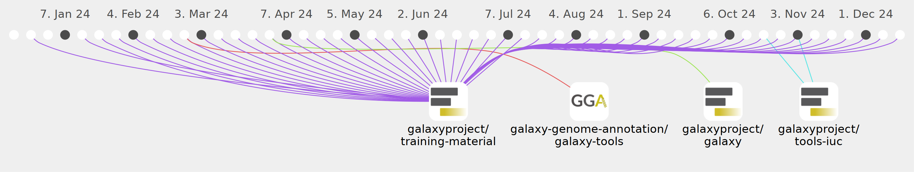

hexylena

Commits all-time: 8814
Commits last year: 1277

(1268)
- 3a37af9
- b903d70
- 523d3aa
- 7eb9944
- b847e1a
- 03b6734
- defc9a9
- 1a4e662
- d427015
- fedb947
- 294f1e7
- 8fb3f5a
- d5a60b8
- eae2e89
- 57cdff9
- 0836149
- a0dca33
- 0a0f0f4
- 0c49007
- 287a31c
- b1456cb
- 3ec9f97
- c466fff
- eb4560b
- f92093e
- b560419
- 53bd397
- 133b97b
- c0c8f53
- 067687b
- 0d552a8
- 229669b
- 61611ee
- 3cb7dcc
- 705e5df
- c70e548
- 5560761
- 439f9c3
- 72db2b3
- 79a8f37
- 32b70fa
- f361ceb
- f8b695c
- 26f946b
- 8969192
- 4e4857b
- 3450ecd
- c8ffb97
- 58e42f9
- 39c3b2b
- f3c7f19
- 15f9c7f
- 12c027a
- 9731b40
- 949071a
- 4c0da41
- 0ce560f
- 9299f5a
- 205d724
- 671b116
- 3cb9e66
- 0d10918
- 4cfd65b
- 63bf70b
- 0171dcb
- 7cb9918
- f25bf5c
- 0bf554d
- 6d58dcd
- 63c944b
- 7ad9b81
- 9502849
- aebb235
- b8bb38e
- ce2c943
- 2ab878c
- ef595d9
- 38aeb49
- caaf1b1
- 7df98b6
- 636eefd
- cf00e33
- 8a1ca90
- bcea2fb
- 04fe840
- bf587d2
- 7162068
- 6ccbdad
- 2b161aa
- f6fa301
- 10a66be
- b4167ba
- cd11bd6
- f778bed
- a57a422
- 8c2b6be
- 62f4254
- 2c42ce2
- 2d0db10
- 2cc8810
- 9103e74
- 8a5443a
- 3377058
- f550715
- 0e86ba5
- 41c47ec
- 56a36cf
- d868626
- 0c17261
- a150d73
- 9b18ed7
- 3679397
- 6d845c5
- d4c4ff1
- d7c221b
- ae7100d
- b9b3edb
- bfe16f3
- 85a8103
- 0dd2500
- 58b8931
- ba160f8
- 9d15691
- 5bb7e0f
- 7653e79
- 14592cd
- 31558ce
- a71e0dc
- 960cd8d
- bc76b41
- 5aa9d65
- 6924cdd
- f0edb00
- 4590efa
- d9d2984
- d90b384
- 8b651dc
- 6544f0a
- 2610652
- a80d7e9
- 7a12aef
- 3c5f418
- 4db5005
- a890f22
- f66dd5b
- 7ef79be
- d930f05
- 9ff3d9e
- 6ebdddb
- 036e70b
- 19d5b30
- 3c76071
- 8b47aa9
- 0fde6e7
- 14326d4
- 6968dfe
- 990266b
- 5565270
- 03fd7fa
- 0e3800f
- 11951a0
- 1c2baaf
- 52efb14
- 25663b1
- 5737938
- a0913bd
- 980e16d
- 1b082ab
- 665dabc
- adc0b0e
- 73d0775
- c667def
- 82c66b3
- e48349b
- dcbb34f
- b9b72f4
- f8b90db
- 3597cbd
- 88e8914
- d490e5c
- c10ffe8
- de66713
- aa463fe
- a92fea9
- f1122d8
- dc52c24
- e3fa1e5
- 58740b6
- 28683a2
- a0a83cc
- 51713a5
- b2b54e8
- fb2aa3c
- 248753a
- 0e10fcf
- 899715b
- af56465
- 68743af
- 36fe01f
- afe1fa3
- 516d4c4
- 6d03fbe
- 8260d00
- 3e78ac7
- f0a8a80
- d0397c8
- f95f72e
- 603273c
- 0b820e8
- f3a615f
- 587627e
- 6d5997d
- 1ea6878
- 6323be0
- f254ea3
- 6e1c229
- 1796941
- e5df316
- af7486b
- 60880e6
- 429138e
- 5adfa0f
- 1c19d66
- f7ea5a2
- d90767e
- 3c739af
- f3f095d
- 91ff5f0
- 700d5b6
- a42511a
- c262e38
- cb32f9a
- 0804d19
- 0f36fab
- b260f4f
- 2c4cb06
- 664f69e
- 508ced1
- b406297
- 5167357
- 5da7a64
- e9fe9ce
- 2096900
- 0046305
- 2b83fbd
- 3de0015
- da03f37
- ddfd6ef
- 7cbd94a
- 1804634
- 8eba639
- 5525b1c
- f9db9e5
- 261d7d9
- 2456c1d
- 8e0a9d1
- 50ff18b
- 015ebc0
- 6fe6d7b
- a3ff02c
- 739f9cf
- 865e1dd
- 9c9f853
- 1829185
- 6042762
- 58c3fdb
- 1dce14d
- 4dcab45
- 7fa178f
- 021c596
- 644b6a0
- d4b1e9f
- 55428c7
- 27e53cb
- 738a2a6
- fb259e3
- 0d5cfd5
- 169b72c
- d573466
- f55e481
- 9b2acb7
- 06dd849
- b1e6b3b
- 594b094
- 04fc23f
- 9dcf546
- 858a4fa
- 84b4807
- 996bb15
- f8cd3e1
- 32ce226
- 6b1327b
- bd2b4ef
- fe0c5dd
- 23ad310
- 33948fe
- 54efc0f
- 68797d6
- c14bdb0
- 8f26423
- 95e3437
- 4191aac
- 53d2190
- a7d0321
- 032a468
- f29b494
- 91e3712
- 289e02e
- 84829dc
- 3338ee8
- 383e715
- ce5a324
- 84e0726
- 71e2fa3
- a0140bc
- fa749bd
- fdd56fa
- f9efc1a
- b8cb629
- 831e98d
- f579134
- 14039e7
- aff2d7b
- a807bb9
- e5ca8e1
- de2a583
- db29ab2
- ab79393
- fe6c761
- f882a9d
- d1ae9e5
- 12f6c12
- 19444b4
- 58a8362
- 8764e6e
- 953ba97
- d2e66a6
- 0df88da
- 4f2f8cf
- 8d51a87
- f9046c5
- f2c3180
- 76bda3b
- a1bc407
- 0ff0971
- 9981964
- 72a306e
- d8eb83b
- 377c676
- aae7813
- 23f9cd3
- 890cc5f
- 22ebc27
- d82a269
- a8ca36b
- 62c7aae
- 97eb24a
- b062383
- 6e0285e
- 8bb8bcd
- a177bdd
- 67d3cc5
- 2b7f5b8
- f516f43
- 7942c6a
- de63d99
- 9aa163b
- 3feb7db
- d5dadd7
- d469bce
- 10aadf9
- e6bd56b
- f77d3b0
- 4107ea8
- dc463d7
- f504e2a
- 18d37f0
- 6f0b7b2
- 0a66b27
- 503a7bb
- 7b3f756
- 3418d81
- aa3f03e
- 6e06f8a
- 83bfd5e
- ff7c902
- 5aa1c84
- 0974134
- 5d3ea1d
- 7870998
- 7f52d4a
- e005a34
- a670ef7
- 5aadedc
- 57411b4
- 833df4c
- 877cf9a
- 20fc8d7
- e17a697
- 2958a2e
- e3f2111
- 5e92654
- 8cc3b4a
- 2554e94
- c50efec
- 04c7e48
- 59e6335
- 7fb7019
- c25a829
- 395f272
- 2040bf5
- 64ee0ce
- a06b240
- c4a929b
- b4cb2d8
- b87e41f
- f839b3f
- e6c3d37
- 4a310d5
- 4a83db4
- 04d8111
- 4fad053
- 418a1d0
- 31f7b56
- 14cdb9f
- 9e5ace1
- 3b6c418
- 30a0aa9
- 1f38e89
- 8ae6eb8
- e969800
- f08a773
- b1716de
- d2b8ff7
- 2404da1
- 275c49f
- a208064
- 3007247
- 6605534
- 6537f8c
- 2f7a352
- 817d401
- 31b88ab
- eb2ff08
- 7f5a336
- 8de19b6
- 6ce1632
- e1d1d1c
- 63e93d7
- ace0efd
- 64f3e2d
- 0b85295
- 1197168
- 489dda8
- bce6c81
- 29ae971
- d798d68
- a913a07
- 094a9bc
- fd475da
- 399748e
- 5ede3ab
- 5b945dd
- ab9567b
- 9685105
- 8100a47
- 2534da7
- 6f3cd72
- 80d8df9
- 770d3f6
- 740a40e
- 48d0f4f
- 6a6541a
- ac05a07
- cdeef22
- b9ae1bd
- 584070d
- 52fbec5
- 9ce0e88
- 01bd803
- e0aab9b
- 8281ee2
- c2cb01a
- b2a6ecd
- 75a05dc
- 282c999
- 8b3bf0d
- 6b93740
- 083efda
- ce4ec5f
- a097795
- 743c335
- c8344f0
- f787554
- e2a4038
- e5e9dc3
- 4388fd8
- a7d11a4
- a4beb6e
- 412b4e3
- 8c8c414
- 4caee18
- eecd755
- 35c6740
- 67ba7ef
- 3817a21
- 4765704
- 547ff52
- d856445
- ecbe293
- e97f8c6
- ecac1e7
- c86f360
- 83f0b2b
- 29109f8
- 0899b44
- 2cf0c36
- 2620a31
- 5187422
- 4535265
- bc27092
- 72f1bbc
- bbee604
- 7c2b23d
- 342364a
- 417be64
- c61df5b
- 67b8b61
- d6b93b5
- 02a4479
- fd2204c
- e53fcba
- 4163f92
- 2e061de
- 15341b5
- 4cfb562
- 390759e
- e85b0b3
- 516e459
- 694067f
- 199e384
- 3b85c2a
- df5b9a6
- b4843a3
- 0b150e3
- be1f1a0
- 88f909b
- ed1bd34
- f075d2f
- 42cba20
- 63b07b1
- 78739a7
- ae4ba8e
- c27eb6b
- ac989b3
- 2de9f97
- e59570f
- f0e44c6
- 30cf643
- 5141d88
- 591b189
- ee341c7
- 6002770
- 0245ed4
- 2b5db41
- 7cad15a
- 2c9a072
- 9ba45c0
- 97bb869
- c2f03bb
- 0c8c3db
- c61ff62
- 346a60b
- fdd1ddc
- a0d5653
- a36ada1
- 1e1cbdd
- 11fde17
- 4c02f9f
- d3ff75c
- 3c8f065
- d4e7792
- 030e12e
- d718a5c
- 2939b5a
- 4dd27af
- 95e1266
- b5a15da
- 93bad57
- 422987d
- b1ba56f
- cc9782a
- dc26a60
- 1c3c015
- 965ae23
- 583e8ff
- adf127f
- d2b4eba
- cc1efa5
- 6af40fe
- 781b288
- ddafcda
- 47a4aa6
- 442eb0e
- 192d2d4
- 4395bd1
- 6f0c8be
- 95f9ec8
- 52ecb60
- 5160a81
- f1a3ce5
- d27a2da
- b96cbcf
- 286fcb0
- 7240092
- 30982b0
- 890d64c
- 8d718cc
- 483483f
- 3f51566
- 4d1625c
- 0f169c0
- a919ab7
- b74fc7c
- 2d7a1e5
- 14610c5
- 6120d0e
- f24c089
- d2ce069
- afb4632
- 0112797
- ec81201
- c593ed3
- 514b810
- 10903f1
- a501693
- e22b4bf
- 2285fa3
- f078d0e
- dbd3849
- 7eefcc7
- 8fa1741
- 911e298
- 7a670c6
- 9995d10
- 2da7d43
- 16ee538
- 3de01ea
- 3f41198
- 6fb64c4
- 2a4fbd7
- 2e55d3a
- 193a4fe
- 9c8e8dc
- 0fd745c
- c1e68f3
- 0d30927
- bc6d5fb
- 13f2db1
- 08003f6
- e3f9e02
- 9a253c8
- a5deec8
- 4e14593
- 42bf582
- 4f070b0
- 6bfb1c3
- 25eedec
- 3b52b07
- 5c99812
- 23c0f52
- 6b96e08
- 3cf60c8
- 9bf8eec
- 7a91be5
- 6e36556
- 61c83bd
- 4abd4a0
- 99238c7
- 5c4e78a
- 37148ad
- 7de69ef
- be01203
- 714422c
- ec13018
- 3b49063
- 91db459
- 02b0bce
- 65690e5
- 61e7b9b
- 5e61994
- 1da5ede
- b8c7e76
- 9901865
- e075558
- d154ea0
- 13daf74
- ab87be7
- d9696c1
- ab89b2a
- ed422d2
- 71c484a
- 38e0921
- 08223b9
- 8ca4b33
- e902d44
- d65e1b3
- f032c37
- 6cc5ef8
- 02c66fe
- d466146
- 9c22f73
- 54ea51b
- dd38dcf
- 39a9c3c
- ab2ad14
- a8a95f8
- 95587d7
- 3f90aaa
- cd1e5cd
- 73a6e82
- 9ac3c3d
- 346bced
- 5fff1ef
- 2551112
- be225b4
- 2067e4c
- 893a987
- 533beb1
- 8e352a6
- 0508f29
- a769436
- 8feaff6
- cb89afd
- 19260c0
- 2a25d30
- ff92205
- 59322c2
- 8c05121
- 8d9450d
- 397075c
- 2300d15
- def751e
- b1909e2
- c916faf
- 3e572db
- 591d93a
- 3ccc3d8
- cbbd19c
- 6e6a463
- 29732b6
- 9764fe4
- 7321307
- 1739299
- a86628a
- 2ce4f63
- 9c3bfcc
- bcedc15
- 8c7139e
- cf51860
- 5f4ccaa
- 93cf1b4
- d16733b
- 1c43a1c
- 018f616
- 6859ca9
- f3dc145
- 80d1a8a
- f169227
- 4759de5
- 8939709
- 4112524
- 087367c
- 8a61b75
- a0d8d75
- b530bea
- aad1680
- 41ceb26
- f19d41b
- 8c2de04
- f1558f4
- 03bf147
- 7e7f2b5
- 83da6d6
- e4a71cc
- fb4b208
- c6763f5
- cf769e7
- e7a7275
- 8f40f32
- e70caaf
- 495c1c1
- cc66374
- b7d1472
- 82efbbc
- 0c1bb89
- 6b78e76
- f8b6662
- 4ff9c80
- 60e4286
- 520c9b1
- c670c70
- ca4c94c
- 315ec2f
- afc4915
- c7f549a
- 8a69678
- abdf497
- 1121193
- 570df07
- 621a2ea
- 1edccb4
- 0020fdc
- 64e09f7
- c1505dd
- 58a0e87
- 3e30ca2
- 8692bc1
- aaf79c0
- 269e78b
- 7ac06cc
- c4b1f07
- 412ca14
- 0aa0b74
- 92090d6
- 405569f
- ee76e37
- b7a2594
- d2366f0
- 6fad243
- 4abf9fc
- 1ac714f
- 390114a
- cb0ae4d
- 74da2c8
- 57ac2e9
- e149038
- e4b9de0
- fc13c7f
- 7d74047
- 5ba1f02
- a3bbd85
- 90e5571
- bf56688
- adc86b9
- 7849f19
- c1977c0
- 5133ae4
- b3a5e24
- 08c7b06
- 7cd8baa
- 05beb50
- 7c90b58
- a6aed6e
- c2c0963
- 88493ce
- 7bd9ed5
- f495075
- 12df6a4
- 00b8d04
- 6405e37
- 05992fb
- ad1646d
- a515202
- 118c312
- 0a21839
- c21d572
- abc5d1f
- 4faaea4
- 5195712
- 40edb4f
- b040b7b
- b888d73
- 0703c63
- 3b38bf7
- 7d2dec3
- 92ff1e8
- 909e2b8
- 2c719f0
- 01aff43
- 75fd80a
- 3f4c2e5
- af470db
- a269d1f
- 2f6db0c
- 5102333
- 609e041
- 001b54d
- ff4763a
- 844a355
- a074633
- cb8488c
- a14c5f4
- 2dd22af
- cbca450
- 5369d27
- 5128d3a
- 47c9742
- 3b366c2
- 0971b0b
- f2b490b
- 2ad57e7
- b252eec
- 598a502
- d4e040f
- 5b6c62b
- 8b354c4
- 9022987
- fd339f7
- 2ebc26e
- 9bf2cc8
- 0ab8cf6
- 5df10cc
- a2e26f7
- 405300e
- 2a464a2
- a1f45af
- 21c3690
- 0082582
- 24fc8f5
- b7e731b
- b8f6a43
- cd8bbb1
- fcd11db
- 4b93773
- dff08b2
- 32553f6
- 187459f
- 331bc52
- 19fd049
- b62c12c
- 548091d
- bd47814
- 37c4a81
- 880c607
- 8052099
- 8f407b7
- 3825187
- 5c08a32
- 6c8c121
- 2c05bf1
- 4d0f559
- 46c493a
- 84661eb
- 7e03db6
- 7e182e1
- 5767a19
- c1f3826
- ab28f9e
- 9340b92
- 599d768
- 58776f7
- 6bf47da
- bb20967
- 698c540
- b90920d
- 71113d1
- 8aab47b
- c9d246e
- 12a17e9
- 4d8a360
- 98a0e2e
- 49863b2
- 09065d7
- 358df09
- 495dbaa
- 6fe4453
- db87d81
- 29724fb
- 4bdde1e
- bc81d59
- 90b60f7
- cdae107
- 32431c5
- 5016542
- a8e034d
- ba917d5
- 2d48479
- e99f65a
- fa2c8dd
- c95973b
- ced8832
- f32f5a8
- 57b00dc
- 9f59b6e
- 8eeb126
- e37caf0
- 8dc4b21
- 796d16c
- b2c60c0
- 2e47281
- dd11913
- 57f9f26
- 4eb7c35
- 50c23f2
- 5e496fa
- cf122d8
- bdf182e
- 50f0cf7
- 1e73b80
- 68773b3
- 61082e5
- 753729a
- a16fa5c
- 9f08345
- aebd9ca
- 5a6f29b
- 32536fe
- 50739ba
- 91e2300
- 999698f
- e72ea7a
- af5b752
- 9fba8bd
- 8af87b6
- 3395483
- c8e93ce
- b6fb793
- 5bf9282
- 4cb9bf7
- 8cd6ec2
- b321edb
- 9cecca9
- 6704325
- 486ee13
- 556a6a6
- abb6997
- d7cef6c
- 2da77a3
- f4ff0c3
- 8001e88
- 9486794
- f95dfae
- 81b50cf
- 36bd207
- 5d737ca
- 6fb92e4
- d5c2004
- d1a3567
- 795d7f8
- 62278d7
- af86bab
- 810a773
- 773b74e
- 950d81e
- c262e19
- 702f45e
- cfbc2ed
- 802c984
- 46e83e8
- b2b77b1
- f7b1fcd
- 8e6264a
- 1dc16f8
- 45ecb05
- ed3376a
- 8cbc489
- b410f32
- 23017b0
- 393a052
- d7190c9
- 690a069
- 38f81ee
- 1b67317
- c653a6a
- 3c8ba20
- 0caaccb
- ae838d6
- a6d5c62
- 54540be
- a2edb24
- 08151e5
- 9969bf8
- 6064e7a
- a296494
- 477ba6b
- 5170e25
- 9c60949
- ab18d8a
- 49cc881
- 356e7ba
- ad455d4
- e53feb4
- 136f423
- 0fa168d
- eddcb93
- 0147a7a
- bebd122
- 0dcb2ba
- 3b04f69
- c173948
- b5453d4
- ebf48df
- 59a00c7
- f5f2aca
- 3e48ed6
- 8a04e60
- ddc8d76
- 55599f3
- 65f703a
- 4a67e9f
- b9bc511
- 0e45d90
- ef38a5e
- 6e17373
- 873c96b
- 2676af2
- ea17bac
- 05cbd61
- 54bff7d
- 0d57ef5
- 5b93fdb
- 9675763
- e5184b0
- 61173df
- 2eec9d5
- a3a785e
- e0dd5d5
- a5304ce
- 5ec1154
- bf53a9e
- fcd0a75
- 4c1db3d
- 2e21f8f
- 8534ba8
- f5767e7
- d13364a
- fda4308
- b9bbaef
- 48687d2
- 5a09b4c
- ad8a994
- 724cecb
- d7df185
- 1a4581e
- 7023d22
- ceab696
- 7f6ee50
- ccba550
- ad6223c
- 76e6272
- b850c27
- d110e90
- 4838324
- 29f54ba
- 6ae5930
- ff2a4f2
- 80fe198
- e59c64f
- b932714
- 8526bd2
- 7c20b99
- 400fb9c
- d8b628e
- 40666de
- aa284c5
- b1aaa25
- 78a62d8
- a64bce9
- f3c3356
- 845dc82
- 2bfbf97
- 8fddd62
- 0728a4b
- 55feb0c
- bde018f
- 8a3251c
- 4daf0cc
- 680ecd7
- aebbba8
- 3f194fb
- de93b73
- f13660a
- ec360e4
- 4822358
- 1d8e1c3
- a28c83c
- 9b54626
- d4e397b
- bce0524
- eeff5d7
- 550acaf
- a886509
- 741ee2f
- e431a0b
- 475f10c
- 10cee7f
- b6b6461
- 85329c1
- e28d6bd
- 05a74ad
- 748077f
- 78a5c7e
- df572bc
- b432e85
- b90468b
- 833143d
- 529e4eb
- e760003
- d517599
- 63abd1d
- 4bd75fb
- e4931cc
- f69cf17
- c66172d
- bded87c
- 739eb7c
- 38fff70
- 89f25c2
- 7b65894
- 4740946
- af8807f
- 4dbb22d
- e59d63e
- 6d81e15
- 6d98f9a
- 087d1aa
- 0cc66f5
- 070c57b
- caff3a9
- de9e24a
- 89edb41
- 0b73a72
- 9d51060
- 878df27
- 6b1f854
- 1b55ee4
- 2e0f94a
- d574da7
- f3324af
- bb0f8c1
- 3d92a1e
- 9c0cda1
- e013740
- 3ed2924
- fdf1de8
- c191a55
- 3cd670d
- 699fbb5
- c68df6b
- d63d404
- 17c582d
- 45973e5
- 5502fdd
- d770408
- c8da5cc
- 6891755
- 6643f43
- 8a84493
- 385dc28
- 6192ed2
- 391594b
- 91a0225
- 2ce8809
- 68106a4
- 8fcf5b7
- 914e6a2
- 5f57713
- a120ba8
- 9c803bf
- d5ca5ec
- c016864
- 05cd6c5
- f388cf2
- 18b9f5c
- fb44351
- 654d13f
- 5c0fe82
(7)
(1)
(1)